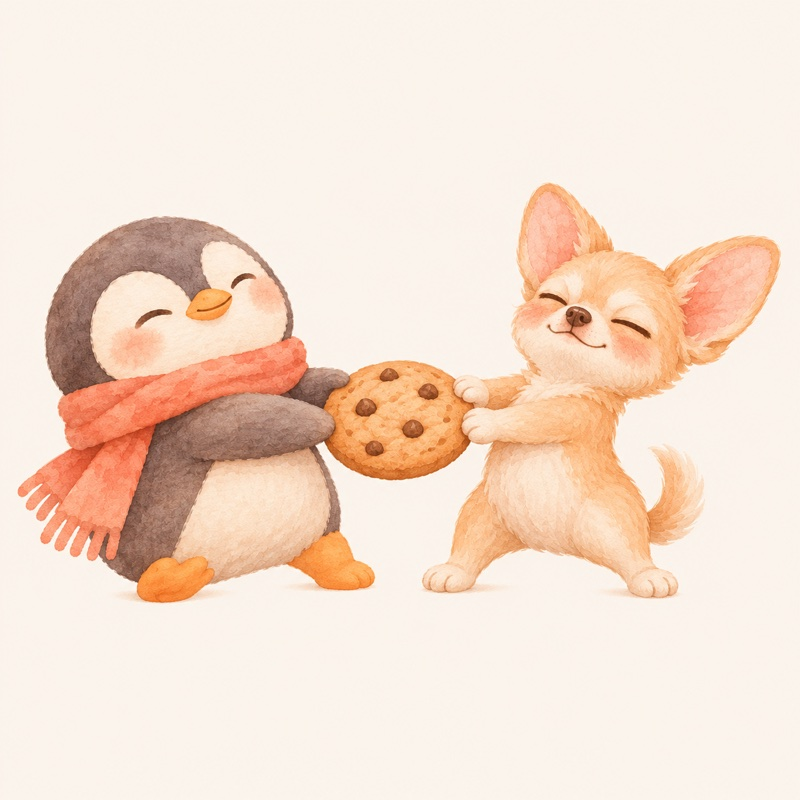
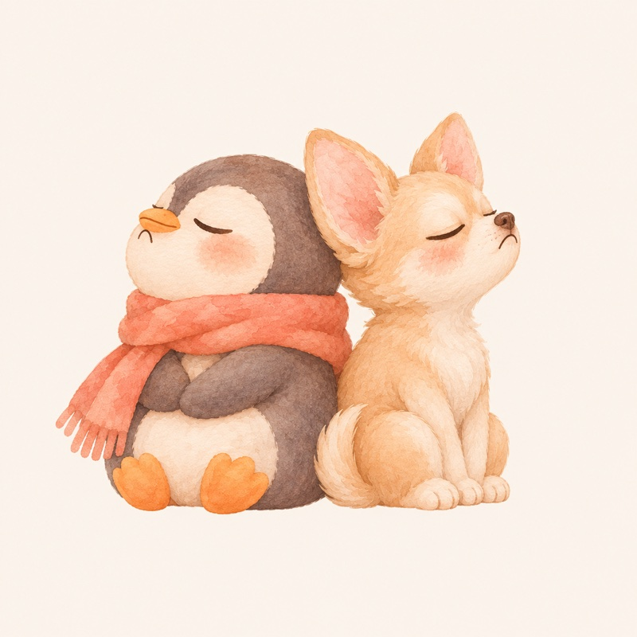
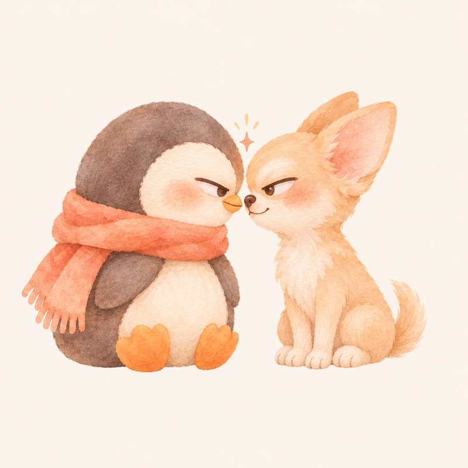
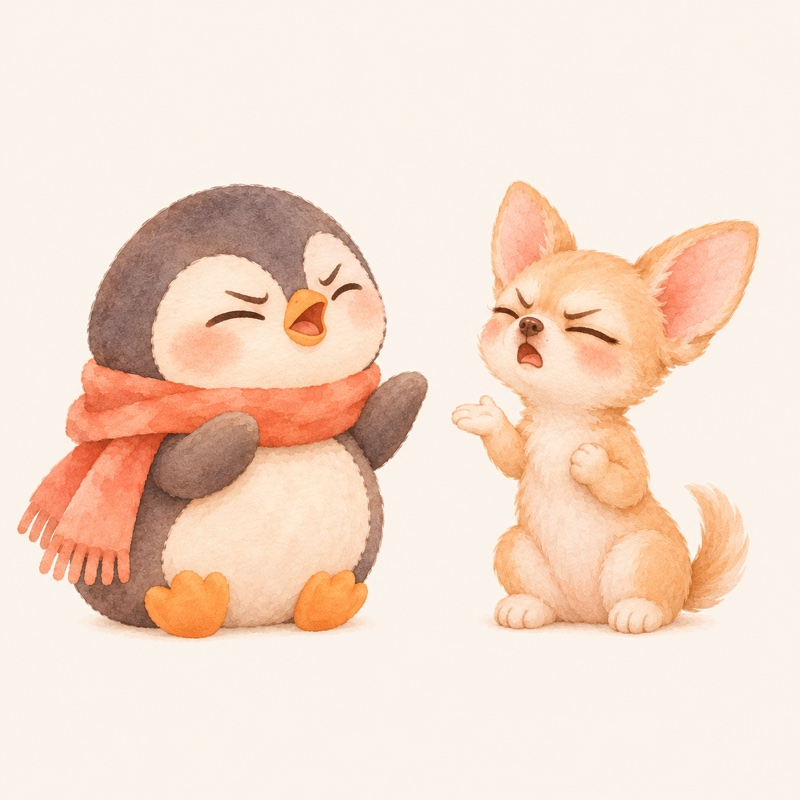
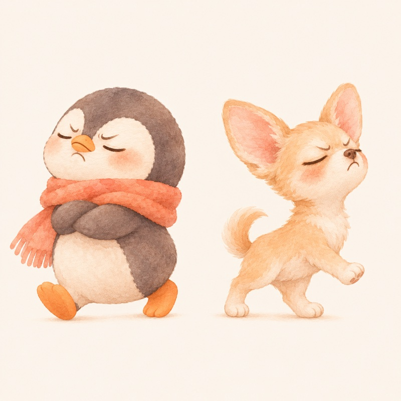
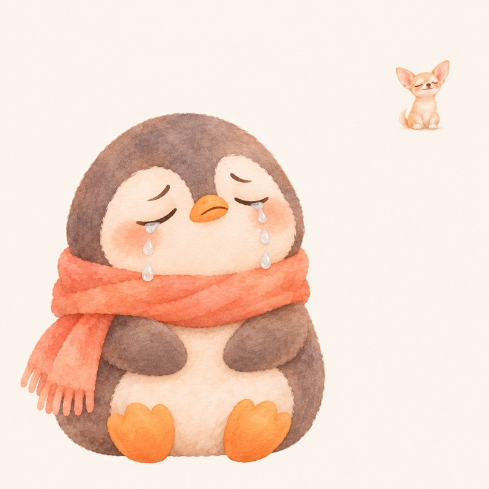
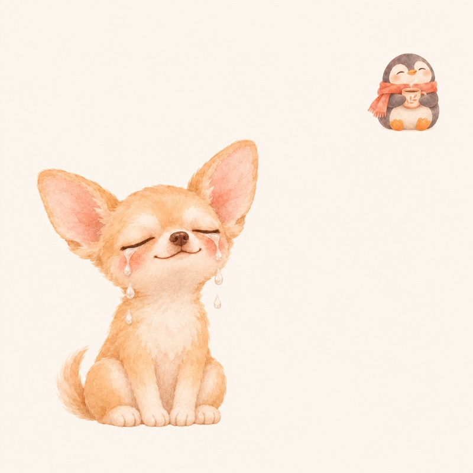
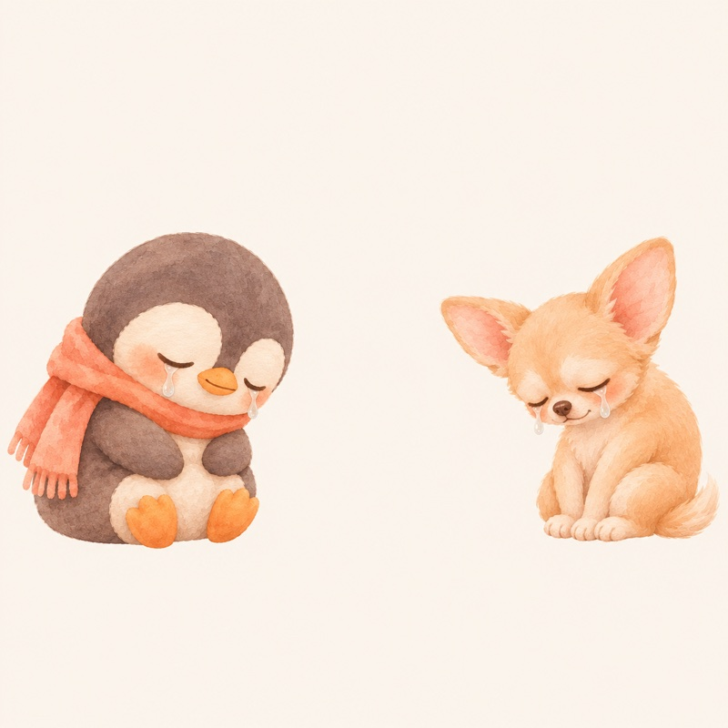
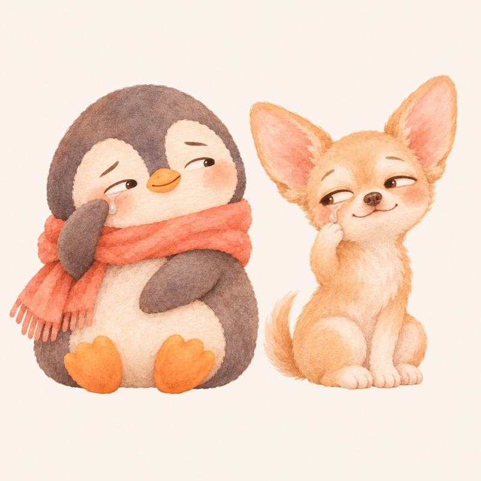
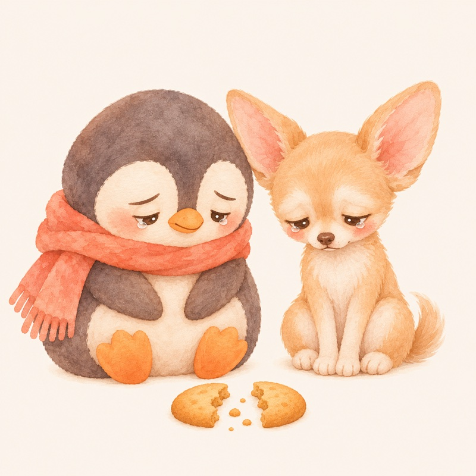

🐧🐶 ふたりのお話
① ケンカ

1枚のクッキーを両側から引っぱり合う

背中合わせでぷいっとそっぽを向く

おでこを近づけてにらみ合う、間に小さな火花

ふたりともぷんぷん怒って言い合っている(吹き出しなし)

怒ったまま反対方向へ歩いていく
② 涙

ペンギンがひとりで座ってぽろぽろ泣いている、チワワは遠くに小さく

チワワがひとりで座ってぽろぽろ泣いている、ペンギンは遠くに小さく

離れた場所でふたりとも背中を丸めて泣いている

ふたりとも涙をふきながら、ちらっと相手のほうを振り返る

ふたりとも、割れたクッキーを見つめてしょんぼり反省している
③ 仲直り
ペンギンがそっとチワワに近づいて声をかけようとしている
クッキーを半分こして差し出す
涙目のままぎゅっとハグする
手をつないでにっこり笑い合う
並んで座り、一緒にマグカップでほっと一息、周りに小さなハート